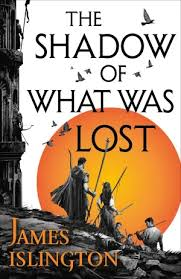

The Shadow Of What Was Lost follows Davian, a young student of the Gifted, who discovers he has the forbidden magic of the Augurs, leading him and his friends into an ancient war.The story is set a world still recovering from a war where the Augurs were overthrown, and those who use magic, the Gifted, are now strictly controlled by the Four Tenents. When davian;s hidden power is revealed, he, along with his friend Wirr, are forced into exile, uncovering secrets about the past and setting in motion events that could change everything.
